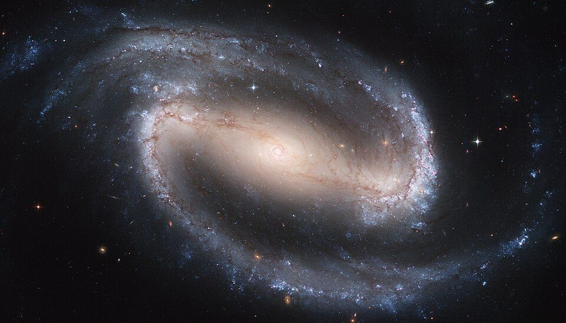

Universo · 5 fichas
Galaxias
La Vía Láctea, Andrómeda y los billones de galaxias del universo: sus formas, sus choques y las grandes estructuras que forman.
Una galaxia es una inmensa ciudad de estrellas, gas, polvo y materia oscura unida por la gravedad. Hasta hace cien años se pensaba que la Vía Láctea era todo el universo. Hoy sabemos que es solo una entre, quizá, dos billones de galaxias.
 La Vía LácteaNuestra galaxia: una espiral barrada de 100.000 años luz con cientos de miles de millones de estrellas y un agujero negro en el centro.
La Vía LácteaNuestra galaxia: una espiral barrada de 100.000 años luz con cientos de miles de millones de estrellas y un agujero negro en el centro. Andrómeda y el Grupo LocalNuestra vecina Andrómeda, las Nubes de Magallanes y las más de 80 galaxias del Grupo Local. Y un choque anunciado.
Andrómeda y el Grupo LocalNuestra vecina Andrómeda, las Nubes de Magallanes y las más de 80 galaxias del Grupo Local. Y un choque anunciado.
Tipos de galaxiasEspirales, elípticas, lenticulares e irregulares: la clasificación de Hubble y lo que nos cuenta la forma de una galaxia. Choques de galaxiasCuando dos galaxias se encuentran, sus estrellas apenas chocan, pero el gas se enciende en millones de estrellas nuevas.
Choques de galaxiasCuando dos galaxias se encuentran, sus estrellas apenas chocan, pero el gas se enciende en millones de estrellas nuevas. Cúmulos y la red cósmicaLas galaxias se agrupan en cúmulos, supercúmulos y filamentos que forman una red gigantesca con enormes vacíos entre ellos.
Cúmulos y la red cósmicaLas galaxias se agrupan en cúmulos, supercúmulos y filamentos que forman una red gigantesca con enormes vacíos entre ellos.